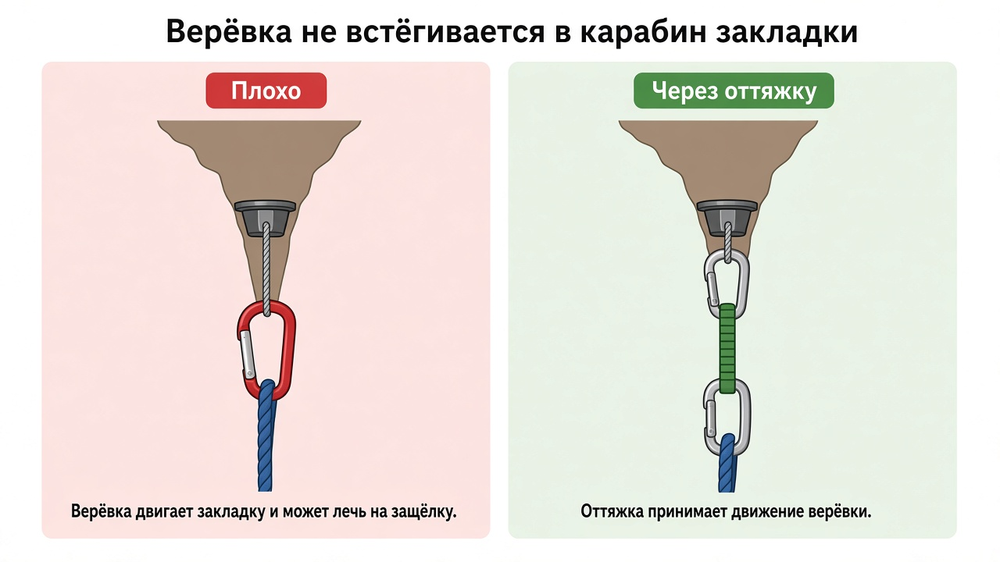
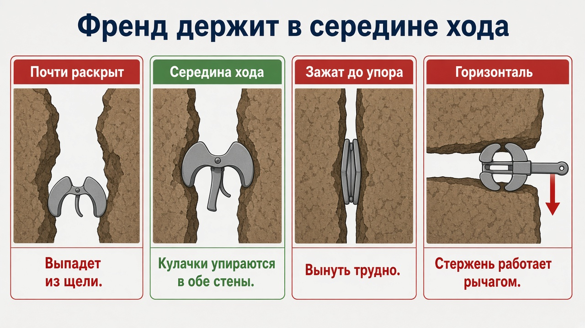

Модуль 8 · Скальный рельеф
8.2. Точки страховки на скалах
Черновик для замечаний к тексту и к рисункам. Курс не опубликован и не даёт допуска. Рисунков в уроке: 4, они стоят под текстом.
Что должна держать точка
Любая страховка надёжна ровно настолько, насколько надёжна точка, в которую встёгнута верёвка, и насколько скала вокруг этой точки согласна держать нагрузку. Порядок цифр помогает отличить запас железа от запаса места. Карабин по стандарту держит не менее двадцати килоньютонов вдоль длинной оси при закрытой защёлке, а поперёк оси и с открытой защёлкой — около семи, поэтому нагрузка через грань скалы или на открытую защёлку забирает у карабина большую часть прочности. Сшитая петля и петля оттяжки держат не менее двадцати двух килоньютонов.
Шлямбур в нагрузке поперёк оси — не менее двадцати пяти. Динамическая верёвка в жёстком испытании передаёт падающему не больше двенадцати килоньютонов, а на практике при срыве на точку приходится заметно меньше. Снаряжение при этом должно быть сертифицировано по стандартам Европейского союза и международной федерации альпинизма UIAA. Инструктор смотрит на маркировку и на то, как точка сидит в скале, потому что слабым звеном почти всегда оказывается порода и установка, а не паспортная прочность железа. Ошибка — доверять блестящему карабину на плохой закладке и считать, что сертификат уже сделал станцию.
Закладки и оппозиция
Закладка, или стоппер, — металлический клин на тросе, и она держит заклиниванием: её ставят туда, где щель сужается по направлению возможного рывка, так чтобы клин касался скалы обеими гранями по всей площади. Эксцентрик, или гекс, устроен иначе: это многогранник, который при рывке проворачивается и распирает щель. Поставленную закладку проверяют рывком вниз и в стороны: она не должна выходить и не должна качаться. Держит закладка только в одном направлении. Тяга верёвки вверх или вбок вытаскивает её из сужения, даже если первый рывок вниз казался уверенным. Второй в связке извлекает закладки экстрактором, специальным крючком. Инструктор смотрит, совпала ли грань клина с сужением и куда пойдёт верёвка на следующем движении. Ошибка — поставить клин в расширяющуюся наружу щель или в любую трещину, «лишь бы вошла»: под нагрузкой такая точка просто выезжает.
Между точкой и верёвкой стоит оттяжка, и верёвку в карабин самой закладки не встёгивают. Если встегнуть верёвку прямо в карабин закладки, верёвка двигает клин при каждом ходе и может лечь на защёлку. Оттяжка забирает это движение на себя. Если щель не сужается в одну сторону, две закладки ставят навстречу друг другу, чтобы они держали одна другую. Это оппозиция закладок: тяга, которая вытаскивала бы одиночный клин, сажает соседний. Инструктор смотрит, есть ли у щели одно ясное сужение по линии будущего рывка. Если его нет, одиночная закладка остаётся украшением до первого подъёма верёвки. Соседняя ошибка — оставить две закладки рядом, но смотрящими в одну сторону: они не страхуют друг друга, и верёвка вынимает обе.
Френды
Френд — устройство с пружинными кулачками. Его сжимают, вводят в щель и отпускают: кулачки распирают даже параллельную трещину, куда закладка не встанет. Рабочее положение — середина хода: кулачки, раскрытые почти до предела, вываливаются, а зажатые до упора потом не достать. Стержень направляют по линии вероятного рывка, и все кулачки должны касаться скалы. В расширяющейся наружу щели, в рыхлой и мокрой породе френд держит плохо. От подёргиваний верёвки он ходит и уползает вглубь, поэтому его встёгивают через удлинённую оттяжку, которая гасит эти подёргивания. Инструктор смотрит на ход кулачков, на контакт каждого из них и на то, не лежит ли стержень поперёк будущего рывка. Ошибка размера выглядит как вина инструмента, хотя френд здесь ни при чём: кулачки просто не попадают в свой ход и либо болтаются, либо сидят свёрнутыми.
В горизонтальной щели жёсткий стержень работает рычагом. Если кулачки сидят неглубоко, срыв может сломать стержень или вывернуть точку из щели. Короткий репшнур на спусковом штыре помогает второму вынуть френд и страхует само устройство. Трёхкулачковый френд в мелкой щели менее устойчив, чем четырёхкулачковый: точек контакта меньше, и перекос выворачивает его легче. Инструктор смотрит, насколько глубоко сели кулачки и не торчит ли стержень длинным плечом. Уход за кулачками — часть того, сработает ли точка в следующий раз. Кулачки моют тёплой водой с мылом, пружины смазывают только силиконом. Масло и смазка для верёвок пружинам вредят: кулачки начинают залипать, и следующая установка выглядит посаженной, хотя ход уже не тот.
Крючья, петли и два смысла железа
Скальный крюк забивают молотком в трещину, и хороший крюк входит с нарастающим, звенящим тоном и сидит до ушка. Глухой звук и раскачивание говорят, что трещина его не приняла. Если крюк вошёл не до конца, его перетягивают петлёй у самой скалы, чтобы уменьшить рычаг. Старый крюк на маршруте ржавеет, люфтит и может быть надтреснут, поэтому ему не доверяют без дублирования. Многократная забивка жёстких крючьев расширяет трещину и оставляет шрамы: следующая закладка уже не находит того сужения, которое было. Мягкий стальной крюк плющится под молотком и часто остаётся в скале. Инструктор слушает тон на последних ударах и смотрит, дошло ли ушко до породы. Ошибка — принять легко вошедший и молчащий крюк за удачную точку или поверить ржавому крюку только потому, что он уже торчит на маршруте.
Петля на выступе — самая простая точка, и именно на ней легче всего потерять прочность узлом, которым её закрепили. Лапка жаворонка, которой петлю затягивают вокруг выступа или дерева, может забрать у петли до трёх четвертей прочности, и на работу остаётся около четверти. На выступ петлю лучше набросить корзиной, чтобы обе ветви лежали на монолитном зубе и нагрузка не душила стропу в узле. Тяжёлый карабин на такой петле не даёт ей сползти, пока лидер идёт дальше. Выступ проверяют ударом, острые грани, которые перетирают петлю, обходят, а саму петлю подбирают так, чтобы рывок вверх её не снял. Петлю продевают через естественную проушину или обводят вокруг живого крепкого дерева. Инструктор смотрит, затянута петля удавкой или лежит корзиной, и нет ли под ней острого ребра. Ошибка — задушить стропу лапкой жаворонка на сомнительном зубе и считать, что узел «только крепче держит».
Свободное лазание значит, что верёвка и железо не помогают идти вверх: они только ловят срыв. Искусственные точки — другое использование того же железа: на него опираются или за него подтягиваются. Разница важна на маршруте с клиентом. Пока железо только ловит падение, линия остаётся той, которую прочитали по зацепам. Как только клиент начинает вставать на оттяжку или тянуться за закладку, он идёт уже по снаряжению, и нагрузка на точку становится другой. Инструктор видит этот переход по руке, которая повисла на карабине, а не на скале. Ошибка — не заметить его и продолжать считать участок свободным лазанием.
Шлямбуры и проверка станции
Шлямбур — стационарная точка в отверстии, просверленном в скале. Распорный анкер держится расклиниванием гильзы или клина, на нём висит проушина, хангер. Клеевой анкер — стержень или кольцо на химическом составе: он долговечнее и не создаёт распорных напряжений в скале. Современная спусковая станция — два независимых шлямбура, соединённые цепью, с кольцом или карабином-рапидом для верёвки.
Спускаются через металл, потому что текстильная петля на спуске прожигается трением, когда верёвку сдёргивают. Во влажном климате и у моря обычная сталь быстро корродирует, поэтому там ставят нержавеющую сталь или титан. Шлямбур надёжен настолько, насколько надёжна скала вокруг и тот, кто его ставил. Инструктор смотрит на пару точек и на металл, через который пойдёт верёвка, а не на одну красивую проушину. Ошибка — собрать спуск на одном шлямбуре и старой петле.
Прежде чем доверить точке человека, её осматривают. Анкер не должен шевелиться и проворачиваться. Ржавчина, рыжие потёки и сочетание разных металлов рядом — признаки коррозии, которая бывает и невидимой. Трещины в скале вокруг анкера означают, что может выломаться сам кусок породы. Погнутая проушина и острые кромки режут верёвку. Кольцо станции протирается верёвкой, и глубокая канавка — сигнал не доверять ему.
Старые выгоревшие петли на станции не используют: ультрафиолет и время забирают прочность. Гайку анкера можно слегка подтянуть, но не перетягивать. Станция — минимум две независимые точки, даже если каждая выглядит идеально. Неизвестные возраст и автор точки не добавляют ей прочности. Инструктор перебирает эти признаки по очереди и при любом из них ставит свою точку рядом. Сомнение в точке — повод поставить ещё одну.
Оттяжка и угол между ветвями
Оттяжка — петля с двумя карабинами между точкой и верёвкой. Верхний карабин с прямой защёлкой встёгивают в точку, нижний, обычно с изогнутой защёлкой, — под верёвку. Их не меняют местами: металл точки оставляет на верхнем карабине заусенцы, которые потом режут верёвку, если этот карабин окажется под верёвкой. Верёвку встёгивают так, чтобы она шла от скалы через карабин наружу, к лидеру: встёгнутая наоборот, она может выщелкнуться при срыве. Защёлки смотрят в сторону от направления движения. Удлинение — длинная петля вместо короткой оттяжки там, где маршрут петляет или точка сидит в нише: верёвка идёт ровнее, трения меньше, и меньше шансов выдернуть закладку или френд. Инструктор смотрит, какой карабин в точке, куда открывается защёлка и не ломает ли короткая оттяжка линию верёвки на изгибе. Ошибка — короткие оттяжки на петляющем маршруте: трение растёт, точки вылетают, а карабин, нагруженный поперёк или через грань скалы, работает уже не вдоль оси.
Станцию из двух точек связывают так, чтобы нагрузка делилась между ними. При угле между ветвями шестьдесят градусов на каждую точку приходится около пятидесяти восьми процентов нагрузки. При девяноста градусах — около семидесяти одного процента. При ста двадцати распределение пропадает: сто процентов, как будто точка одна. При ещё большем угле каждая точка нагружена сильнее, чем сам груз. Поэтому угол между ветвями держат не больше шестидесяти градусов, точки разносят не слишком широко, а станцию собирают так, чтобы при выходе одной точки система не провалилась на большую длину и не дала рывка на вторую. Инструктор смотрит на угол между ветвями и на то, сколько верёвки выберется, если одна точка откажет. Ошибка — развести точки широко «для надёжности» и получить угол, при котором каждая ветвь держит весь груз, или оставить станцию из одной точки, потому что она «выглядит крепкой».
Этот текст даёт теорию точек страховки: установку отрабатывают только очно, и чтение не является допуском и не заменяет аттестацию.
Рисунки урока



